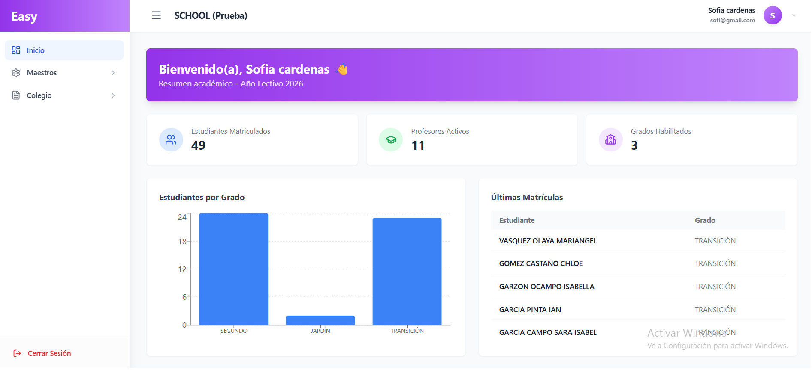

Alumnos
Matrícula, datos personales y seguimiento por curso en un solo lugar.
Gestión académica
EASY School simplifica la administración escolar. Matricula alumnos, asigna profesores, carga calificaciones, genera boletines, consulta la ficha técnica del estudiante y lleva el observador disciplinario sin procesos manuales ni archivos dispersos.

Herramientas pensadas para el día a día de tu institución educativa.
Matrícula, datos personales y seguimiento por curso en un solo lugar.
Plantilla docente y asignación de materias por período académico.
Carga de calificaciones por materia, período y grupo de estudiantes.
Generación de boletines e informes académicos por alumno.
Perfil completo del alumno: datos personales, académicos y de seguimiento en un solo lugar.
Registro de observaciones, llamados de atención y seguimiento disciplinario por estudiante.
Diseño simple para que el equipo docente adopte el sistema rápidamente.
Acompañamiento desde la implementación y resolución de dudas operativas.
Elige según estudiantes y usuarios de tu institución. Pago anual: ahorras 2 meses.
Anual $990.000 al año
Hasta 70 estudiantes, 7 usuarios
Anual $1.490.000 al año
Hasta 150 estudiantes, 15 usuarios
Anual $2.490.000 al año
Hasta 400 estudiantes, 30 usuarios
Anual $3.490.000 al año
Hasta 800 estudiantes, 80 usuarios
Para instituciones que necesitan centralizar la gestión académica: alumnos, notas, boletines, ficha técnica del estudiante y observador disciplinario.
Sí. El módulo de notas permite registrar calificaciones por período y materia de forma organizada.
Sí. Una vez cargadas las calificaciones, puedes generar boletines e informes por alumno.
Sí. La ficha técnica concentra el perfil del estudiante, y el observador disciplinario permite registrar observaciones, llamados de atención y seguimiento por alumno.
Planes desde $99.000/mes (Junior, hasta 70 estudiantes) hasta $349.000/mes (Plus, hasta 800 estudiantes). Pagando anual ahorras 2 meses. Setup inicial $150.000, gratis con plan anual.
Te mostramos EASY School en acción y te enviamos el plan ideal para tu institución.